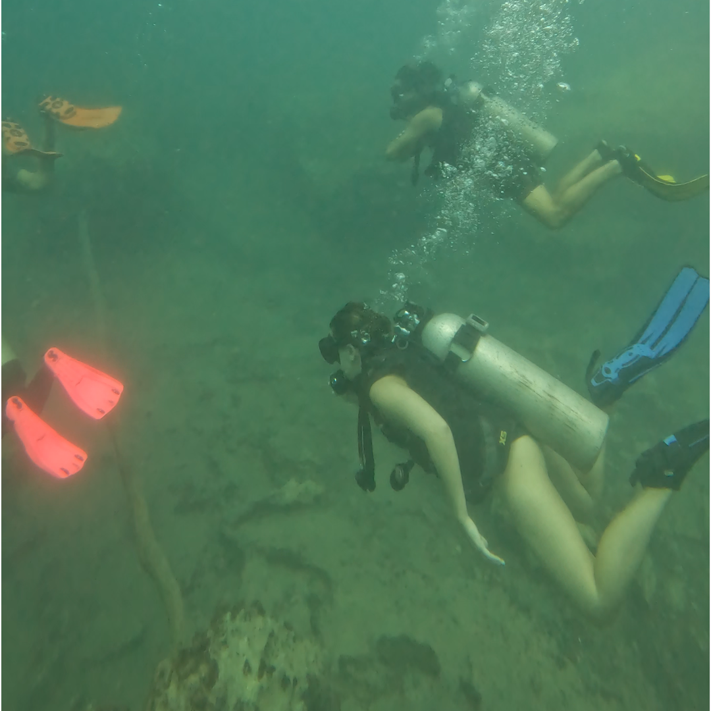
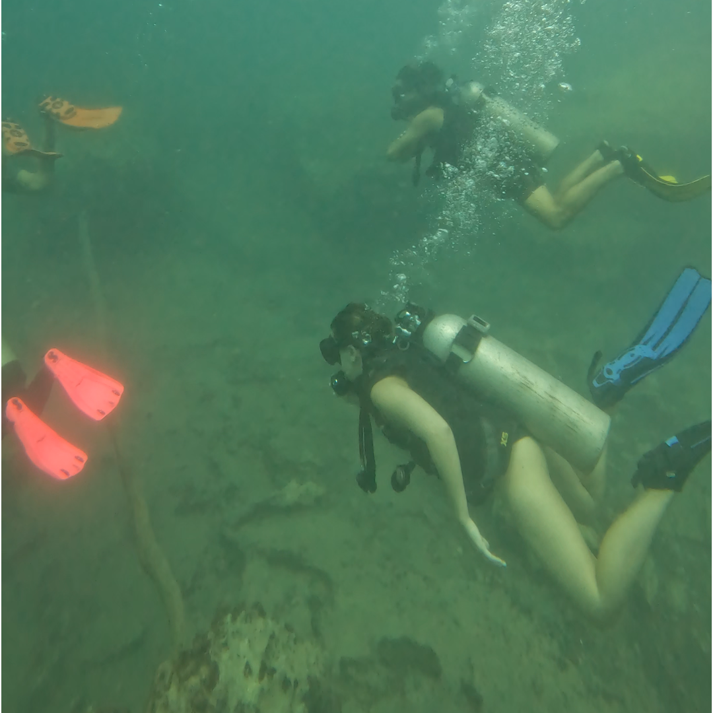

Film:"Coron wreck diving"

Your Journey to the wreck diving
Why Barracuda Lake is Special
Barracuda Lake is one of the most unusual diving spots in the world. Hidden inside the mountains of Coron, this lake has no waves at all – the water is completely still and crystal clear. It's a calm and peaceful dive in a surreal landscape of sharp limestone cliffs.
A Natural Phenomenon
What makes Barracuda Lake famous is its unique thermocline. As you dive deeper, the water temperature quickly changes – from about 28°C to up to 38–40°C! This is due to a layer of hot water trapped under the surface, making it feel like diving in a hot bath.
Dive Highlights
- Visibility: 15–25 meters
- Water Type: Mix of freshwater and saltwater
- Temperature: From 28°C at the surface up to 40°C at depth
- Surroundings: Limestone cliffs, quiet and peaceful environment
- Experience Level: Best for Open Water divers and above

 

Tips for Diving Barracuda Lake
Always dive with a guide familiar with the site. The changing temperatures can be surprising, but perfectly safe. Because of the mix of fresh and saltwater (called halocline), your visibility may shift slightly – it’s an amazing effect! No currents and no waves make it perfect for underwater photography and relaxing dives.
Dive with Umali Dive Center
At Umali Dive Center, we offer unforgettable trips to Barracuda Lake. Our experienced instructors will guide you through this natural wonder, making sure you feel safe and enjoy every second. We use top-quality equipment and create a fun, friendly dive experience for every guest.
Don’t miss the chance to dive in one of the most memorable places in Coron. Book your adventure today!